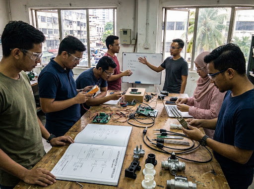
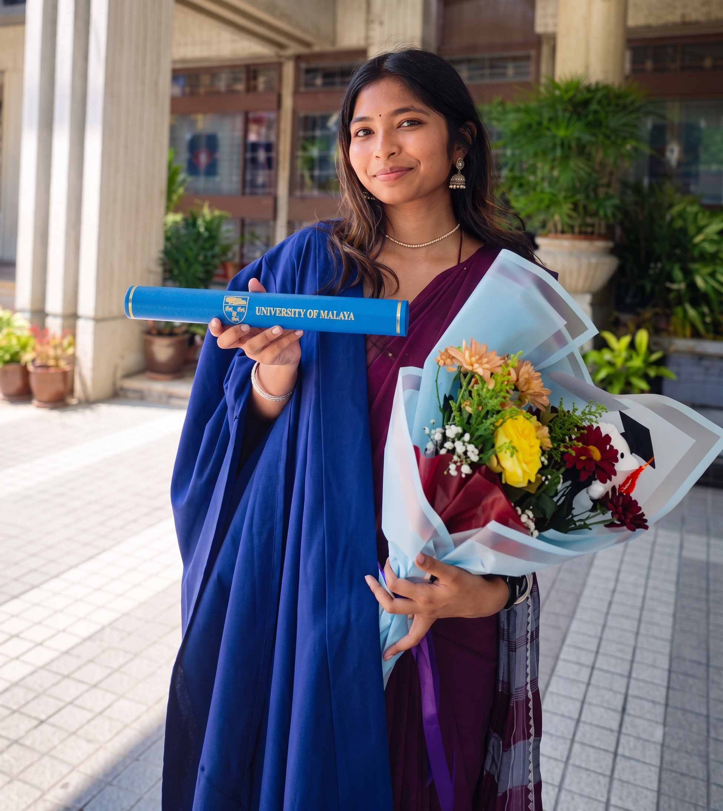
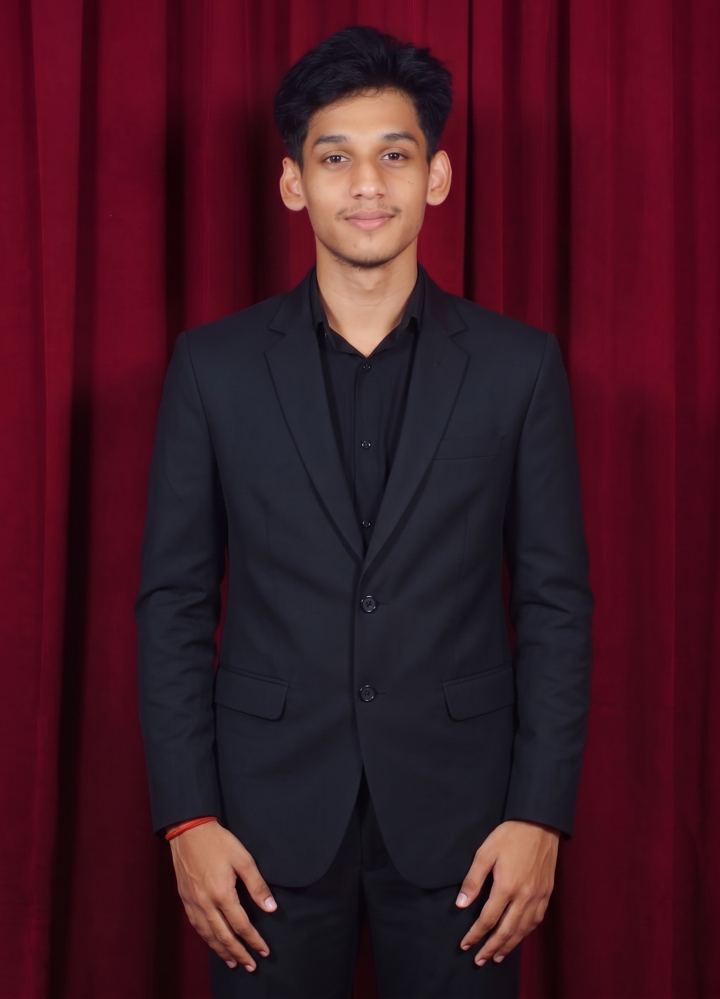

Field Reality First
We begin by seeing how work is done and where problems happen.
● Our Team
Grow Grid brings together electrical engineering, automation, hardware, and business knowledge to research practical farm problems with input from the people who work in agriculture.

Core Principles
We begin by seeing how work is done and where problems happen.
Systems should be clear, maintainable, and suitable for real farm conditions.
Farms should be able to start small without replacing everything at once.
Feedback, testing, and learning are part of our research process.
Reliable farm automation needs more than software. Our team combines electrical engineering, automation, hardware design, and business knowledge.
B.Eng. (Electrical) UM · Power Systems
Electrical Project Engineer focused on HV/LV installations, robotics, and site automation..

B.Eng. (Electrical) UM · Automation Engineer
Specialises in factory and farm automation, control systems, and smart equipment.
BAcc (UM) · Finance & Operations
Has plantation experience and manages farm finances, operations, and budgets.

B.Eng. (Electrical) UM · Hardware Engineer
Designs durable hardware, circuit boards, and custom electronics for field use.
Open Channels & Dialogue
Whether you run a farm, support agricultural development, supply equipment, or work directly with growers, we would value the chance to learn from your experience.
Field Research Collaboration
Tell us about your farm, work, or repeated problems. We speak directly with growers across Malaysia to understand real conditions and find useful research areas.
Agencies & Partners
Contact our team about research, industry collaboration, equipment knowledge, or general questions.